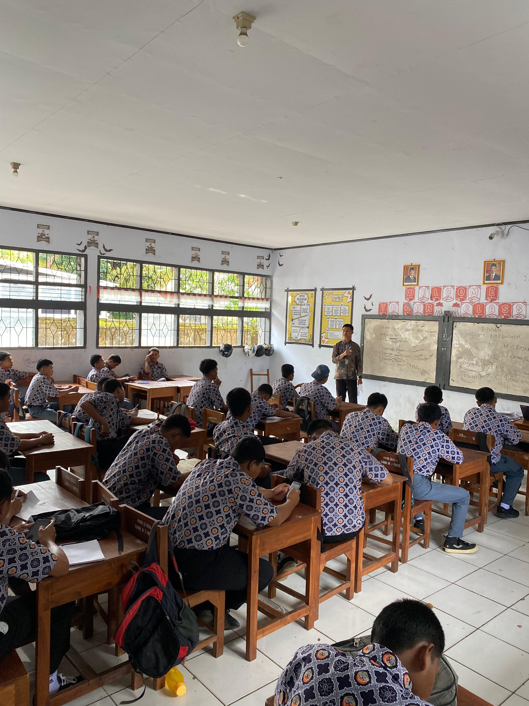
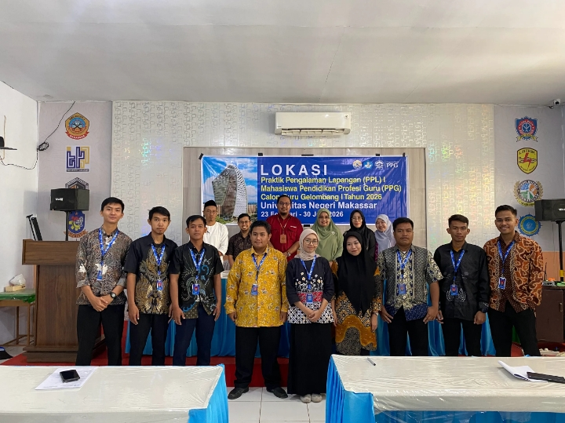
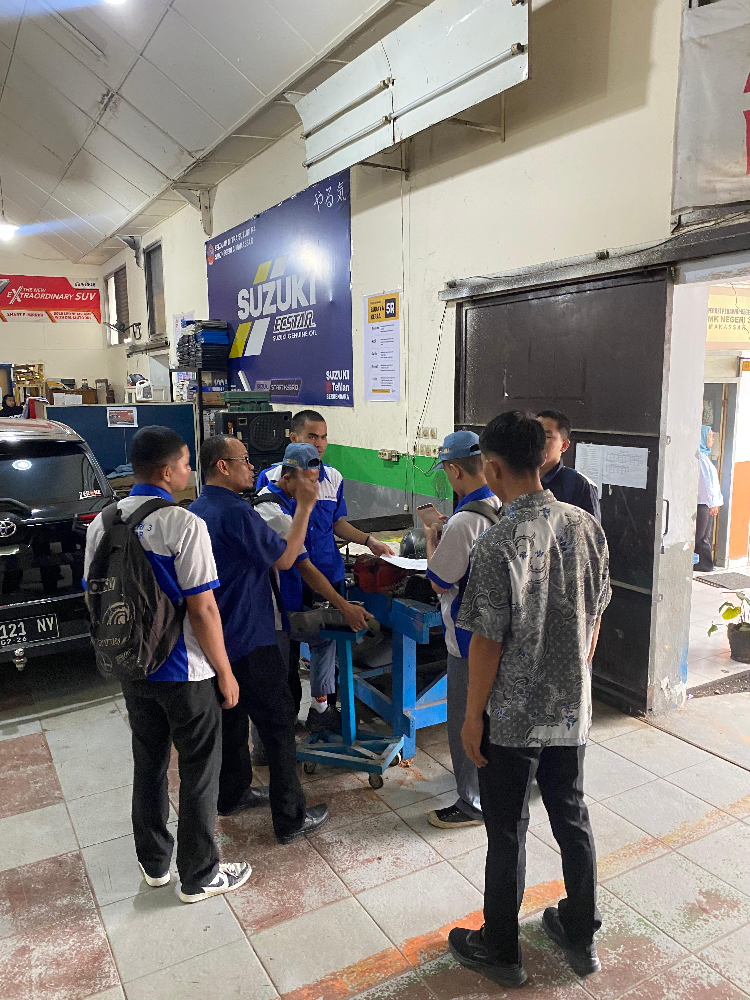
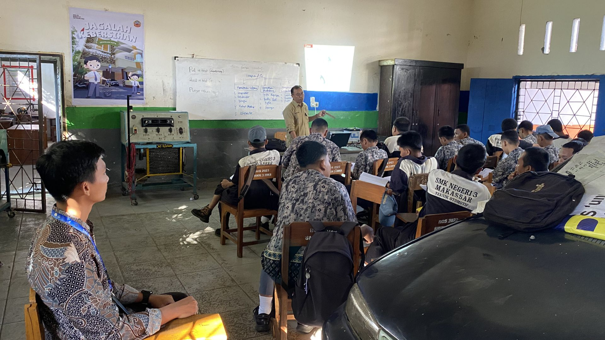
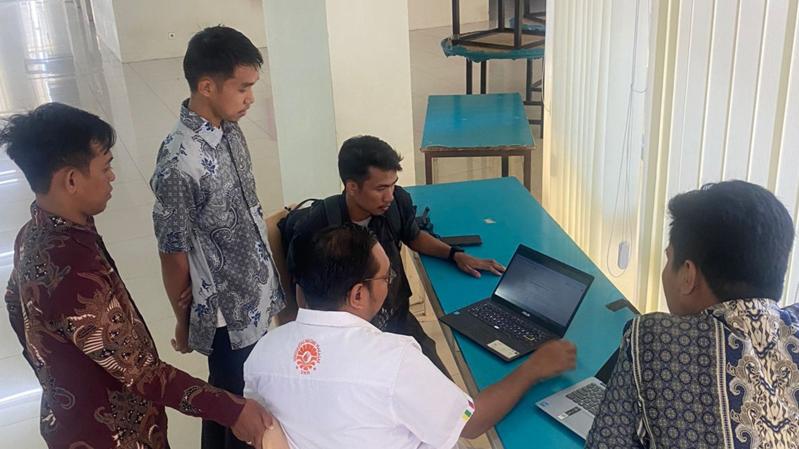
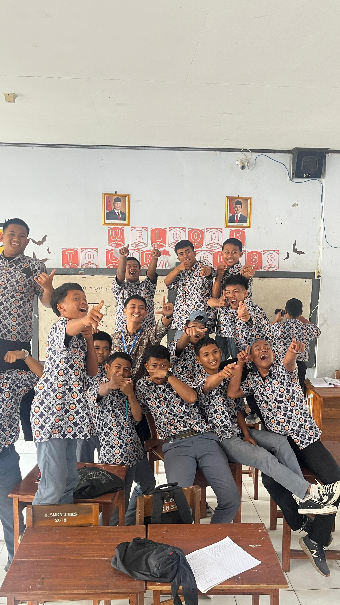
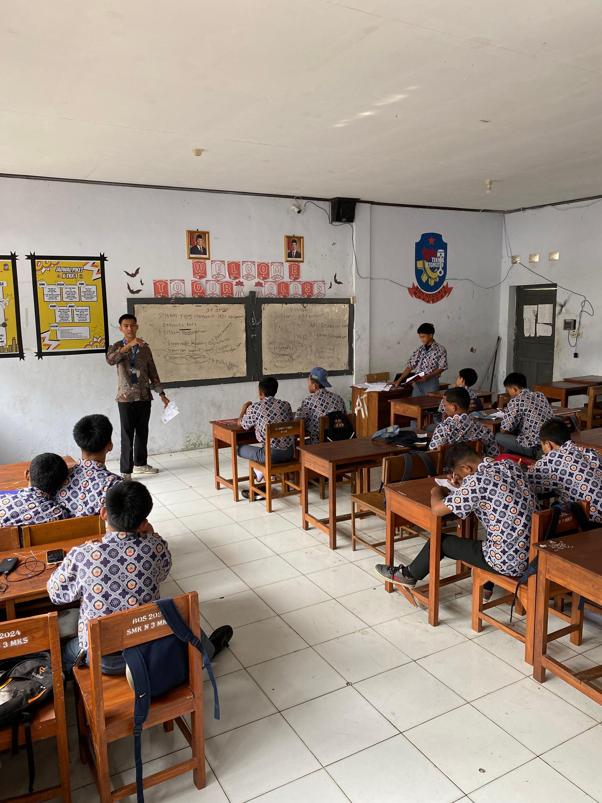
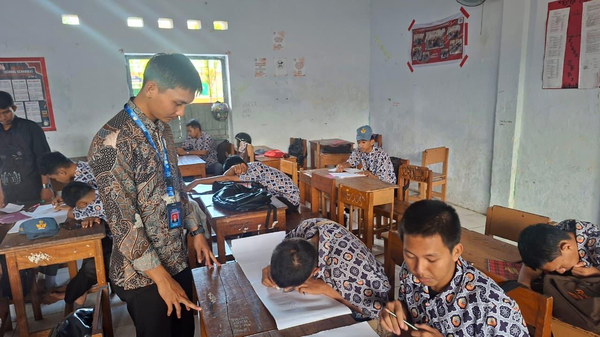
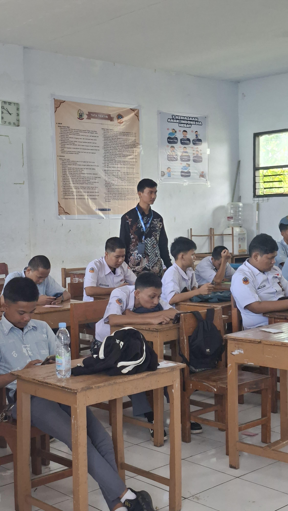

E-Portofolio
Mallarangan, S.Pd.
Calon Pendidik Profesional Teknik Otomotif
Selamat datang di ruang refleksi digital saya. Melalui platform ini, saya mendokumentasikan perjalanan membangun fondasi karakter dan kompetensi. Ruang ini menjadi saksi proses belajar saya dalam bertumbuh menjadi pendidik masa depan yang profesional, inovatif, dan adaptif.

Teknik Otomotif
Universitas Negeri Makassar
Profil Mahasiswa
Mallarangan,S.Pd.
Kontak:
Mallarangan0705@gmail.com +6288247304625Alamat:
Dusun Saggebongga, Desa Aeng Towa, Kecamatan Galesong Utara, Kabupaten Takalar, Provinsi Sulawesi Selatan"Guru sejati adalah mereka yang tidak hanya berdiri di depan kelas untuk mentransfer isi buku teks, melainkan mereka yang mampu menyentuh hati, membuka pikiran, dan menyalakan percikan potensi dalam diri setiap muridnya."
Data Diri Akademik
Nomor Induk Mahasiswa
2590074950851
LPTK PPG
Universitas Negeri Makassar
Bidang Studi
Teknik Otomotif
Lokasi PPL Terbimbing
SMK Negeri 3 Makassar
Dosen Pendamping Lapangan
Ir. Wabdillah, S.Pd., M.Pd.
Guru Pamong
Imran Madjid, S.Pd., M.Si., M.Pd.
Asal & Keunikan Daerah
Saya berasal dari Kabupaten Takalar. Kabupaten Takalar memiliki perpaduan yang sangat kaya antara budaya pesisir, sejarah kerajaan, dan kuliner khas yang menjadikannya salah satu daerah paling unik di Sulawesi Selatan.
Inspirasi & Tujuan Menjadi Guru Profesional
Menjadi guru profesional bukan sekadar tentang menjalankan profesi atau menyampaikan materi kurikulum di depan kelas. Ini adalah sebuah komitmen mendalam untuk menjadi agen perubahan yang membentuk masa depan generasi muda.
Analisis Artefak Pembelajaran
Bagian ini memuat refleksi dan analisis mendalam terhadap produk pembelajaran (Perangkat Ajar, Media, atau Asesmen) yang telah disusun selama pelaksanaan PPL.
Evaluasi dan Analisis Perangkat Pembelajaran: Siklus 1
1. Relevansi dengan Teori Pemahaman Peserta Didik
Konteks Teori: Konsep ini menyoroti pentingnya mengenali latar belakang, tingkat kesiapan kognitif, serta kondisi sosial-emosional siswa sebagai dasar dalam merancang pembelajaran yang berpusat pada peserta didik.
Refleksi Penerapan: Selama proses pembelajaran, terlihat adanya dinamika berupa siswa yang kelelahan dan kurang berkonsentrasi karena harus memenuhi tanggung jawab membantu perekonomian keluarga setelah jam sekolah.
Dampak Pedagogis: Memahami realitas ini mengubah cara pandang saya dalam mengajar menjadi lebih penuh empati. Untuk menjaga fokus siswa tanpa menambah beban kognitif secara berlebihan, saya meninggalkan metode pengajaran satu arah. Sebagai gantinya, saya menerapkan komunikasi yang persuasif serta memperbanyak kegiatan praktik berbasis motorik agar siswa tetap interaktif dan antusias.
2. Relevansi dengan Konsep Pembelajaran Mendalam (Deep Learning)
Konteks Teori: Pendekatan Deep Learning mewajibkan proses belajar yang bermakna (meaningful), merangsang nalar kritis, kemampuan pemecahan masalah, serta penerapan ilmu di dunia nyata—bukan sekadar hafalan.
Refleksi Penerapan: Penerapan kerangka Understanding by Design (UbD) sangat membantu dalam menstrukturkan materi secara kohesif, misalnya dalam menyusun alur 6 pertemuan untuk materi Sistem AC atau merancang langkah pemecahan masalah sistem air conditioning di SMK Negeri 3 makassar. Tujuan akhir pemahaman sudah dikunci sejak awal (sebagai backward design).
Dampak Pedagogis: Penggunaan kerangka kerja Understanding by Design (UbD) sangat membantu dalam menyusun materi secara kohesif. Sebagai contoh, dalam merancang enam pertemuan untuk materi Sistem AC dan strategi pemecahan masalahnya di SMK Negeri 3 Makassar, tujuan akhir pembelajaran telah dikunci sejak awal melalui pendekatan backward design.
3. Tinjauan Artefak Rencana Pembelajaran
Konsep Pedagogi yang Diadopsi: Mengintegrasikan kerangka UbD dengan pendekatan Deep Learning dan Problem-Based Learning (PBL) untuk memastikan setiap teori terhubung langsung dengan simulasi di bengkel.
Tantangan di Lapangan: Kesulitan utama adalah menjaga partisipasi siswa yang energinya berfluktuasi akibat aktivitas pascasekolah, serta memastikan seluruh siswa dapat memahami materi otomotif yang rumit secara merata.
Solusi dan Pembelajaran: Teori yang padat diubah menjadi Lembar Kerja Peserta Didik (LKPD) interaktif dan Jobsheet praktik yang berbasis penemuan (inquiry). Selain itu, format pengumpulan tugas dibuat lebih inklusif dan fleksibel (baik berupa dokumen maupun tautan digital) sehingga siswa dapat mengumpulkan karya sesuai dengan kemampuan dan aksesibilitas mereka.
4. Identifikasi Kendala dan Strategi Solusi Pedagogis (Problem-Solving)
Konteks Kendala
Tantangan terbesar saat praktik mengajar justru terletak pada kondisi sosial-emosional dan kesiapan siswa, bukan pada kerumitan materi teknis otomotif. Banyak siswa yang terlihat lelah, kehilangan fokus, dan motivasinya menurun. Pendekatan personal mengungkapkan bahwa kondisi ini dipicu oleh beban kerja siswa di luar jam sekolah untuk membantu keluarga.
Analisis Berdasarkan Teori
Merujuk pada konsep Pemahaman Peserta Didik, kelelahan fisik berdampak langsung pada menurunnya memori kerja (working memory) siswa. Jika saya bersikeras menggunakan metode ceramah konvensional untuk materi yang rumit (seperti sistem hidrolik), hal itu hanya akan memicu kebosanan dan pembelajaran menjadi tidak bermakna.
Langkah Solutif Profesional
Untuk mengatasi situasi ini, saya menyesuaikan strategi fasilitasi tanpa harus mengorbankan standar kompetensi industri, melalui langkah-langkah berikut:
Adaptasi Pendekatan Deep Learning: Saya mengurangi porsi penyampaian teori di kelas dan memperbanyak kegiatan penemuan di bengkel. Melalui Jobsheet yang terstruktur, siswa diajak lebih banyak bergerak dan berdiskusi, yang terbukti ampuh mengembalikan fokus dan kewaspadaan mereka.
Fleksibilitas Asesmen:: Menyadari keterbatasan tenaga dan waktu siswa, saya menyederhanakan format pengumpulan tugas (mendukung format Word, PDF, hingga tautan daring). Hal ini memangkas beban administratif sehingga siswa dapat berfokus pada substansi penyelesaian masalah.
Komunikasi Persuasif dan Empatik: Saya menempatkan diri sebagai fasilitator yang mengerti kondisi mereka guna menciptakan ruang belajar yang aman (safe environment). Saat siswa merasa usaha mereka dihargai, motivasi intrinsik untuk belajar pun kembali tumbuh.
Refleksi Diri
Pengalaman ini menyadarkan saya bahwa kemampuan problem-solving guru Otomotif tidak terbatas pada mendiagnosis masalah mesin, tetapi juga mendiagnosis masalah belajar siswa. Perpaduan antara empati dan desain pembelajaran mampu menciptakan pengalaman belajar yang adaptif terhadap realitas kehidupan siswa.
5. Diskusi Umpan Balik (Feedback)
Catatan: Diskusi ini adalah hasil observasi setelah pelaksanaan siklus pembelajaran materi Sistem Pengapian.
| Pihak Observer / Pendidik | Catatan Umpan Balik & Refleksi | Rencana Tindak Lanjut |
|---|---|---|
| Guru Pamong (Imran Madjid, S.Pd., M.Si., M.Pd.) |
Mengapresiasi penyesuaian strategi mengajar untuk siswa yang kelelahan. Metode tutor sebaya dinilai sangat efektif dalam menjaga ritme kerja kelompok.. | Disarankan untuk menambahkan ice breaking mekanikal singkat (contoh: permainan identifikasi alat) sebelum siswa mengerjakan Jobsheet utama. |
| Dosen Pembimbing Lapangan (DPL) (Ir. Wabdillah, S.Pd., M.Pd) |
Apresiasi atas penggabungan model PBL dengan aspek Mindful-Meaningful-Joyful yang terlihat jelas pada studi kasus LKPD. Keberpihakan kepada siswa sangat kuat. | Validasi pada rubrik observasi perlu dibuat lebih spesifik. Penilaian afektif harus mampu mengukur secara jelas aspek kolaborasi antarsiswa saat bekerja di bawah tekanan.. |
| Mahasiswa PPG (Mallarangabn,S.Pd.) |
Sepakat dengan masukan pembimbing. Dinamika kelas membuktikan bahwa manajemen kesiapan mental siswa sama pentingnya dengan persiapan materi teknis. | Akan merevisi Modul Ajar dan Jobsheet selanjutnya dengan menyisipkan rubrik observasi keaktifan kolaborasi dan kegiatan transisi sebelum memasuki area bengkel. |
Analisis Perangkat Pembelajaran Siklus 2
1. Kaitan dengan Teori Pemahaman Peserta Didik
Konteks Teori: Pendekatan ini menggarisbawahi urgensi memahami profil siswa secara utuh—mulai dari latar belakang sosiokultural, kapasitas kognitif, hingga dinamika emosional—sebagai pijakan utama dalam menyusun desain instruksional yang berpusat pada siswa.
Observasi Lapangan: Pada pelaksanaan kelas luring, tampak adanya kesenjangan tingkat konsentrasi dan kebugaran di antara para siswa. Ditemukan fakta bahwa beberapa peserta didik mengalami kelelahan ekstrem akibat harus bekerja paruh waktu demi menopang ekonomi keluarga setelah jam sekolah usai.
Implikasi Pedagogis: Kondisi sosial tersebut memicu transformasi pada strategi pengajaran. Untuk menghindari kejenuhan akibat metode ceramah satu arah, fokus pembelajaran digeser ke arah interaksi yang dialogis dengan memperbanyak aktivitas motorik (praktik langsung). Langkah ini terbukti ampuh dalam menjaga keterlibatan dan antusiasme belajar mereka tanpa memberikan beban kognitif berlebih.
2. Kaitan dengan Teori Pembelajaran Mendalam (Deep Learning)
Konteks Teori:Pendekatan Deep Learning mensyaratkan proses edukasi yang bermakna, di mana siswa didorong untuk berpikir kritis, mampu memecahkan masalah, dan mengaitkan pengetahuan dengan situasi dunia nyata, bukan sekadar menghafal materi.
Refleksi Penerapan: Kerangka Understanding by Design (UbD) digunakan sebagai acuan dalam merancang alur kompetensi yang terintegrasi selama 6 pertemuan untuk materi Sistem AC di SMKN 3 Makassar. Melalui prinsip backward design, target akhir pembelajaran telah dikunci sejak awal sebagai fondasi perencanaan.
Dampak Pedagogis: Efek positifnya, siswa tidak lagi hanya menghafal nama dan definisi komponen, seperti evaporator atau katup ekspansi. Mereka kini ditantang untuk menganalisis fungsi setiap komponen dalam satu siklus refrigerasi utuh dan menerapkan penalaran diagnostik saat mencari penyebab kerusakan. Hal ini sangat efektif untuk menutup jurang pemisah antara teori di kelas dan standar asesmen industri.
3. Analisis Artefak Produk Rencana Pembelajaran
Teori atau Konsep Pedagogi yang Diadopsi: Pembelajaran ini memadukan prinsip UbD, Deep Learning, dan model Problem Based Learning (PBL). Sinergi ketiga konsep ini memastikan bahwa teori yang diajarkan selalu berujung pada penyelesaian masalah nyata yang sering ditemui di bengkel otomotif.
Hambatan: Tantangan utama di lapangan adalah kondisi psikologis dan fisik siswa yang kelelahan akibat rutinitas di luar jam sekolah. Selain itu, terdapat kesulitan dalam memahamkan siswa pada konsep rumit seperti kelistrikan dan tekanan mekanis AC secara merata.
Solusi dan Pembelajaran: Untuk mengatasinya, materi abstrak disederhanakan ke dalam Lembar Kerja Peserta Didik (LKPD) yang interaktif dan Jobsheet berbasis inkuiri (penemuan masalah). Pengumpulan tugas juga dibuat sangat adaptif; siswa dibebaskan untuk menyusun portofolio dalam berbagai format digital dan mengunggahnya ke Google Drive sekolah, menyesuaikan dengan keterbatasan waktu yang mereka miliki.
4. Kendala yang Terjadi dan Solusi Pedagogis (Problem-Solving)
Konteks Kendala
Tantangan terbesar dalam praktik ini bukanlah pada penyampaian materi teknis, melainkan pada manajemen emosi dan kesiapan belajar siswa. Hasil asesmen diagnostik awal (non-kognitif) menunjukkan bahwa hilangnya motivasi dan rasa kantuk di kelas sebagian besar disebabkan oleh beban fisik siswa yang harus bekerja membantu keluarga sepulang sekolah.
Analisis Berdasarkan Teori
Merujuk pada teori perkembangan dan pemahaman peserta didik, kelelahan fisik secara langsung menurunkan kapasitas memori kerja (working memory) anak. Memaksakan metode ceramah panjang mengenai hukum termodinamika atau sistem hidrolik pada anak yang kelelahan hanya akan memicu burnout akademis dan menghilangkan esensi pembelajaran.
Langkah Solutif Profesional
Merespons kondisi tersebut, strategi fasilitasi disesuaikan tanpa harus mengorbankan standar kompetensi industri:
Adaptasi Pendekatan Deep Learning: Waktu untuk paparan teori di dalam kelas dipangkas. Siswa langsung diarahkan ke bengkel untuk praktik berbekal Jobsheet yang terstruktur. Dinamika diskusi kelompok dan aktivitas fisik selama menangani unit kendaraan terbukti ampuh mengembalikan fokus mereka.
Asesmen Adaptif: Menyadari minimnya waktu luang siswa, aturan pengumpulan portofolio dibuat lebih longgar. Berkas dalam bentuk Word, PDF, maupun tautan dokumen daring bebas digunakan. Fleksibilitas administrasi ini membantu siswa untuk tetap fokus pada inti pemecahan masalah.
Pendekatan Empatik:: Peran sebagai fasilitator yang suportif dan berempati terhadap realitas kehidupan siswa sangat dikedepankan. Hal ini berhasil menciptakan lingkungan belajar yang aman (safe environment) sehingga motivasi internal siswa perlahan kembali tumbuh.
Refleksi Diri
Fase ini menyadarkan saya bahwa kompetensi utama seorang guru produktif tidak sebatas mampu mendiagnosis kerusakan kompresor AC, tetapi juga harus tajam dalam membaca hambatan mental siswa. Melalui perpaduan empati dan kerangka kerja UbD, esensi pembelajaran yang bermakna tetap bisa direalisasikan meskipun dihadapkan pada realitas hidup siswa yang berat.
5. Diskusi Umpan Balik (Feedback)
Catatan: Diskusi di bawah ini merupakan hasil observasi pasca-pelaksanaan siklus pembelajaran pada materi Sistem Pengapian.
| Pihak Observer / Pendidik | Catatan Umpan Balik & Refleksi | Rencana Tindak Lanjut |
|---|---|---|
| Guru Pamong (Imran Madjid, S.Pd., M.Si., M.Pd.) |
Keputusan memindahkan pusat pembelajaran dari kelas ke bengkel menggunakan Jobsheet sangatlah tepat. Ini adalah solusi konkret untuk mengatasi kantuk dan hilangnya konsentrasi siswa akibat bekerja paruh waktu. | Guna mengatasi ketimpangan stamina antar-siswa, terapkan metode Tutor Sebaya. Pasangkan siswa yang rentan lelah dengan siswa yang berprestasi tinggi agar tercipta transfer ilmu dan kolaborasi tim yang sesuai dengan SOP bengkel otomotif. |
| Dosen Pembimbing Lapangan (DPL) (Ir. Wabdillah, S.Pd., M.Pd) |
PImplementasi Backward Design (UbD) sudah tampak nyata; penalaran klinis berhasil diselaraskan dengan evaluasi portofolio yang fleksibel. Kelonggaran format tugas digital ini adalah bukti keberpihakan guru pada realitas siswa (sejalan dengan Deep Learning). | Portofolio di Google Drive sudah bagus, namun perlu dilengkapi dengan penilaian formatif langsung (on-the-spot assessment). Gunakan rubrik observasi singkat saat siswa mengoperasikan alat (manifold gauge, vacuum pump) agar keterampilan teknis mereka bisa langsung divalidasi dan dikoreksi di bengkel.. |
| Mahasiswa PPG (Mallarangan, S.Pd.) |
Saya sepakat dengan masukan Guru Pamong dan DPL. Dinamika kelas membuktikan bahwa mengelola kesiapan psikologis siswa di bengkel sama pentingnya dengan penguasaan materi teknis kelistrikan atau AC itu sendiri. | Pada siklus berikutnya, Modul Ajar dan Jobsheet akan direvisi dengan memasukkan metode Tutor Sebaya. Saya juga akan menyisipkan rubrik observasi formatif langsung, serta menyiapkan ice breaking bertema mekanikal untuk memusatkan fokus siswa sebelum praktik dimulai. |
Analisis Perangkat Pembelajaran Siklus 3
1. Relevansi dengan Teori Pemahaman Peserta Didik
Konteks Teori: Pendekatan ini menggarisbawahi urgensi memahami profil siswa secara utuh—mulai dari latar belakang sosiokultural, kapasitas kognitif, hingga dinamika emosional—sebagai pijakan utama dalam menyusun desain instruksional yang berpusat pada siswa.Konsep ini menyoroti pentingnya mengenali latar belakang, tingkat kesiapan kognitif, serta kondisi sosial-emosional siswa sebagai dasar dalam merancang pembelajaran yang berpusat pada peserta didik.
Refleksi Penerapan: Dalam modul Sistem Audio Video ini, rancangan pembelajaran telah mengakomodasi berbagai kategori peserta didik (Reguler, Hambatan Belajar, dan Pencapaian Tinggi). Instrumen asesmen diagnostik awal, baik kognitif maupun non-kognitif (seperti menanyakan hobi, minat otomotif, dan aktivitas di rumah), digunakan untuk memetakan kesiapan dan gaya belajar siswa.
Implikasi Pedagogis: Memahami realitas ini mengubah cara pandang dalam mengajar menjadi lebih penuh empati dan terstruktur. Bagi siswa dengan hambatan belajar, pendekatan diferensiasi diterapkan melalui pendampingan intensif, penyediaan bahan ajar visual (video), dan bimbingan teman sebaya agar mereka tidak tertinggal. Sebaliknya, siswa pencapaian tinggi diberikan pengayaan analisis kasus. Hal ini menjaga ritme kelas tanpa menambah beban kognitif secara berlebihan.
2. Kaitan dengan Teori Pembelajaran Mendalam (Deep Learning)
Konteks Teori:Pendekatan Deep Learning mewajibkan proses belajar yang bermakna (meaningful), merangsang nalar kritis, kemampuan pemecahan masalah, serta penerapan ilmu di dunia nyata dengan penuh kesadaran (mindful) dan menyenangkan (joyful).
Refleksi Penerapan: Pendekatan Deep Learning (Mindful – Meaningful – Joyful) secara eksplisit digabungkan dengan sintaks Problem Based Learning (PBL). Misalnya, pada pertemuan 15-16, fase Mindful dibangun dengan menyajikan skenario masalah kontekstual: audio mobil mati total padahal aki dalam kondisi baik.
Dampak Pedagogis: Penggunaan kerangka ini sangat membantu dalam menyusun materi kelistrikan secara kohesif untuk 6 pertemuan (24 JP) di SMKN 3 Makassar. Tujuan akhir pembelajaran telah dikunci sejak awal melalui pendekatan backward design, memastikan siswa tidak hanya hafal komponen, tetapi mampu mendiagnosis dan memperbaiki gangguan pada sistem audio video secara nyata.
3. Analisis Artefak Produk Rencana Pembelajaran
Teori atau Konsep Pedagogi yang Diadopsi: Mengintegrasikan model PBL dengan pendekatan Deep Learning dan moda Blended Learning (menggunakan Google Drive, YouTube, dan praktik langsung).
Hambatan: Mengajarkan sistem kelistrikan terintegrasi, khususnya analisis wiring diagram dan aliran sinyal audio, sering kali menjadi tantangan karena konsep yang cukup abstrak bagi sebagian siswa Kelas Otomotif.
Solusi dan Pembelajaran: Teori yang padat diubah menjadi penugasan terstruktur melalui Lembar Kerja Peserta Didik (LKPD) yang menuntut penemuan interaktif. Saat praktik, siswa dipandu menggunakan Jobsheet Pemeriksaan Sistem Audio Video yang sangat spesifik, meliputi pemeriksaan tahanan speaker, tegangan head unit, hingga kontinuitas kabel.
4. Kendala yang Terjadi dan Solusi Pedagogis (Problem-Solving)
Konteks Kendala
Tantangan terbesar saat praktik mengajar sistem audio video terletak pada kemampuan analisis kelistrikan dasar siswa. Banyak siswa yang kebingungan saat membaca wiring diagram atau menggunakan multimeter untuk melacak polaritas speaker dan tegangan sinyal.
Analisis Berdasarkan Teori
Merujuk pada konsep Pemahaman Peserta Didik, kerumitan membaca skema diagram dapat membebani memori kerja (working memory) siswa. Jika metode yang digunakan hanya demonstrasi satu arah dari guru, akan memicu kebosanan dan miskonsepsi yang fatal (seperti konsleting/ short circuit saat praktik).
Langkah Solutif Profesional
Untuk mengatasi situasi ini, strategi scaffolding diterapkan melalui langkah-langkah berikut:
Adaptasi Pendekatan Deep Learning: Membagi tugas penyelidikan dalam kelompok heterogen (Joyful). Siswa diajak melakukan analisis alur kerja sistem dari sumber hingga ke speaker menggunakan media video sebelum terjun ke unit kendaraan sungguhan (Meaningful).
Tutor Sebaya: Menyadari perbedaan daya tangkap, siswa yang mencapai nilai tinggi (pengayaan) difungsikan sebagai tutor sebaya bagi kelompoknya. Hal ini membangun komunikasi suportif antarsiswa.
Fasilitasi Empatik dan Umpan Balik: Guru memberikan penguatan konsep (clarification) dan meluruskan miskonsepsi kelistrikan setelah presentasi kelompok, menciptakan ruang belajar yang aman bagi siswa untuk melakukan kesalahan dalam skenario diagram sebelum menyentuh komponen fisik.
Refleksi Diri
Pengalaman ini menyadarkan saya sebagai mahasiswa PPG Calon Guru bahwa kemampuan memecahkan masalah (problem-solving) tidak terbatas pada mendiagnosis masalah head unit atau amplifier, tetapi juga mendiagnosis masalah belajar siswa. Perpaduan antara alat bantu digital dan Jobsheet terstruktur mampu menciptakan pemahaman teknis yang kuat.
5. Diskusi Umpan Balik (Feedback)
Catatan: Diskusi ini adalah hasil observasi setelah pelaksanaan siklus pembelajaran materi Sistem Audio Video Kendaraan Ringan.
| Pihak Observer / Pendidik | Catatan Umpan Balik & Refleksi | Rencana Tindak Lanjut |
|---|---|---|
| Guru Pamong (Imran Madjid, S.Pd., M.Si., M.Pd.) |
Mengapresiasi integrasi assemen diagnostik di awal pembelajaran. Namun, pengawasan keselamatan kerja (K3) dan APD saat siswa menggunakan multimeter pada kelistrikan kendaraan harus lebih ketat agar tidak terjadi short circuit | Akan menambahkan prosedur mitigasi K3 kelistrikan secara eksplisit (seperti pelepasan terminal negatif baterai) ke dalam sesi briefing sebelum siswa menggunakan Jobsheet praktik. |
| Dosen Pembimbing Lapangan (DPL) (Ir. Wabdillah, S.Pd., M.Pd) |
Sintaks PBL dan pembagian peran dalam kelompok (ketua, sekretaris, presenter, pengamat) sudah sangat baik dalam mendorong kolaborasi (DPL 5). Rubrik observasi sikap formatif perlu diperjelas indikatornya. | Merevisi instrumen Lampiran 2 (Asesmen Formatif) dengan menyusun rubrik turunan yang lebih objektif dalam menilai partisipasi dan kualitas kelengkapan LKPD. |
| Mahasiswa PPG (Mallarangan, S.Pd.) |
Sepakat dengan masukan pembimbing. Dinamika di Kelas Otomotif membuktikan bahwa manajemen pendampingan siswa (terutama yang memiliki hambatan belajar) sama pentingnya dengan menyiapkan unit troubleshooting otomotif. | Mengoptimalkan blended learning dengan memastikan seluruh modul digital dan video tutorial sistem audio dapat diakses secara offline untuk mengantisipasi kendala koneksi siswa. |
A. Kendala Penyusunan
Keberagaman Profil Peserta Didik: Tantangan terbesar yang dihadapi adalah sulitnya mengidentifikasi tingkat kesiapan dan karakteristik belajar siswa secara menyeluruh. Pada kelas observasi PPL, variasi kemampuan berpikir kognitif dan preferensi belajar antar siswa sangatlah mencolok.
Penerapan Strategi Diferensiasi: Walaupun asesmen diagnostik telah dilaksanakan pada tahap awal, menerjemahkan hasil tersebut ke dalam rancangan pembelajaran berdiferensiasi (baik dari segi konten maupun proses) pada Modul Ajar dan LKPD terbukti cukup rumit.
Manajemen Waktu: Upaya untuk menjembatani proporsi materi yang pas bagi siswa yang cepat memahami (fast learner) dan yang membutuhkan waktu ekstra (slow learner) membuat desain kegiatan dan penyusunan instrumen menyita waktu jauh melebihi target awal.
B. Adopsi Teori & Pedagogi
Landasan Filosofis: Pengembangan perangkat pembelajaran ini berakar pada aliran Konstruktivisme, yang dimanifestasikan secara praktis melalui model Problem-Based Learning (PBL).
Konsep Pedagogi: Berpijak pada keyakinan bahwa peserta didik mengonstruksi pemahamannya secara aktif melalui interaksi nyata dan penyelesaian masalah, bukan sekadar menjadi penerima informasi pasif dari guru.
Implementasi pada Produk: Struktur Modul Ajar dan LKPD dirancang dengan menyajikan orientasi masalah yang kontekstual di bagian awal. LKPD berfungsi sebagai pemandu diskusi dan investigasi mandiri, sehingga mengalihkan peran pendidik dari pusat informasi (teacher-centered) menjadi seorang fasilitator.
C. Faktor Keberhasilan
Pemanfaatan Media Interaktif: Keberhasilan utama pembelajaran didorong oleh penggunaan media visual yang interaktif. Media ini efektif mendobrak kepasifan siswa yang selama ini terbiasa dengan metode ceramah konvensional.
Optimalisasi Fokus Siswa: Penerapan media berbasis gamifikasi dan tayangan video animasi edukatif terbukti secara signifikan mendongkrak atensi serta keterlibatan peserta didik sepanjang proses belajar.
Konkretisasi Konsep Abstrak: Media yang digunakan mampu mengilustrasikan materi yang rumit menjadi lebih konkret sehingga mudah dipahami. Hal ini berhasil memantik rasa ingin tahu siswa sejak tahap apersepsi hingga akhir sesi.
D. Adaptasi Situasional
Modifikasi LKPD: Bagi kelas dengan tingkat kesiapan kognitif yang lebih rendah, petunjuk kerja dalam LKPD dirombak menjadi lebih bertahap (step-by-step) dengan dukungan bantuan (scaffolding) yang terukur demi mencegah rasa frustrasi pada siswa.
Penyesuaian Bahan Bacaan: Bahan literasi pada Modul Ajar disesuaikan kembali menggunakan pilihan kata (diksi) yang lebih sederhana agar selaras dengan tingkat perkembangan bahasa dan pemahaman peserta didik.
Fleksibilitas Asesmen: Rubrik penilaian formatif dimodifikasi sedemikian rupa agar target Kriteria Ketercapaian Tujuan Pembelajaran (KKTP) menjadi lebih realistis dan adaptif terhadap kemampuan awal siswa.
Lampiran Penilaian PPL
Keterangan: Bagian ini berisi hasil penilaian otentik dari Guru Pamong terkait rancangan perangkat pembelajaran (Lampiran 7) dan praktik mengajar di kelas (Lampiran 8) yang telah dilaksanakan selama 3 siklus.
Lampiran 7
Instrumen Penilaian Perangkat Pembelajaran
Dokumen ini memuat nilai dan catatan dari Guru Pamong terhadap Modul Ajar/RPP, Media, LKPD, dan Instrumen Penilaian yang disusun pada siklus 1 hingga 3.
| Siklus | Materi |
|---|---|
| Siklus 1 | Sistem Pengapian |
| Siklus 2 | Sistem Air Conditioning |
| Siklus 3 | Sistem Audio Vidio |
Lampiran 8
Instrumen Penilaian Praktik Mengajar
Dokumen ini berisi hasil evaluasi keterampilan mengajar (keterampilan membuka pelajaran, penguasaan materi, pengelolaan kelas) yang dinilai oleh Guru Pamong.
| Siklus | Fokus Keterampilan | Nilai |
|---|---|---|
| Siklus 1 | Pengelolaan Kelas | |
| Siklus 2 | Penggunaan Media | |
| Siklus 3 | Evaluasi Pembelajaran |
Model Guru yang Dituju
Rancangan misi, kompetensi, dan karakter ideal yang ingin saya bangun untuk menjadi seorang Guru Profesional abad ke-21.
Misi Pribadi
- Menyelenggarakan kelas yang adil, bermakna, dan sepenuhnya berorientasi pada kebutuhan siswa.
- Membangun atmosfer belajar yang menyenangkan dan inklusif bagi semua murid.
- Menstimulasi keterlibatan aktif dan komunikasi dua arah dari peserta didik.
Kompetensi Inti
- Pedagogik: Menguasai teori belajar dan karakteristik peserta didik.
- Profesional:Menguasai perkembangan teknologi otomotif.
- Digital: Mampu merancang media interaktif.
Karakter Pendidik
- Reflektif: Fokus pada perbaikan kualitas mengajar melalui evaluasi diri yang konsisten.
- Empati: Menghargai dan memahami keunikan serta latar belakang individu peserta didik.
- Inovatif: Antusias mencoba pendekatan baru yang solutif untuk mengoptimalkan kelas.
Refleksi Akhir & Filosofi
Bagian ini memuat refleksi akhir dan filosofi pendidikan yang akan di adopsi dalam pembelajaran dikelas ketika melaksanan PPL Mandiri dan ketika penulis menjadi seorang guru.
Refleksi
Melaksanakan Praktik Pengalaman Lapangan (PPL) Terbimbing di program keahlian Teknik Kendaraan Ringan SMK Negeri 3 Makassar merupakan sebuah proses transformasi yang sangat bermakna bagi saya sebagai calon guru. Pengalaman ini tidak sekadar menguji kemampuan teoretis, tetapi juga melatih kepedulian, kemampuan beradaptasi, serta dedikasi penuh terhadap kemajuan peserta didik
1. Apa yang telah mahasiswa pelajari sebagai peserta PPG calon guru selama tahapan PPL Terbimbing dari awal hingga akhir?
Sepanjang pelaksanaan PPL Terbimbing, saya memperoleh pemahaman mendalam tentang cara merancang dan mengeksekusi pembelajaran yang relevan bagi siswa Otomotif. Secara khusus, saya mendalami penerapan pendekatan Deep Learning (Pembelajaran Mendalam) untuk menyusun materi yang rumit agar lebih mudah dipahami. Saat membuat modul ajar dan memandu kelas untuk materi Sistem Pengapian, Sistem AC, dan Sistem Audio Video, saya menyadari bahwa kunci keberhasilan pembelajaran ada pada integrasi yang padu antara teori, praktik, dan evaluasi. Di samping itu, saya berlatih menganalisis perangkat rencana pembelajaran secara sistematis. Proses ini meliputi pencatatan berbagai kendala di kelas serta evaluasi atas pendekatan pedagogis yang diterapkan. Pemanfaatan teknologi juga menjadi pelajaran berharga, seperti pemakaian software simulasi sebelum praktik dengan mesin sungguhan, serta pembuatan e-portofolio yang adaptif untuk berbagai format dokumen maupun tautan.
2. Apakah terdapat pengalaman yang menantang dan bagaimana solusi dari permasalahan tersebut?
Tantangan terbesar yang saya temui bukanlah rumitnya materi teknis otomotif, melainkan dinamika kelas dan kondisi personal para siswa. Saya berhadapan dengan latar belakang siswa yang beragam; tidak sedikit dari mereka yang datang ke kelas dalam keadaan lelah dan kurang konsentrasi karena harus bekerja membantu ekonomi keluarga di luar jam sekolah.
Solusi yang Diterapkan :
Menyikapi realitas tersebut, saya mengubah pola pikir saya dari sekadar "penyampai materi" menjadi "fasilitator yang penuh empati". Saya menyesuaikan alur pembelajaran agar lebih ramah bagi kondisi mereka tanpa mengorbankan standar capaian kompetensi. Saya menggunakan metode Problem-Based Learning (PBL) untuk menghubungkan masalah teknis pada kendaraan dengan kasus-kasus nyata di lapangan. Strategi ini terbukti jitu dalam meningkatkan motivasi belajar siswa karena materi terasa lebih aplikatif. Mereka juga mendapatkan lebih banyak ruang untuk berkolaborasi dan memecahkan masalah bersama, alih-alih sekadar mendengarkan ceramah teori.
3. Apakah umpan balik atau saran konstruktif yang diberikan kepada mahasiswa dalam diskusi refleksi akhir sebagai bentuk perbaikan untuk ke tahap PPL selanjutnya (PPL Mandiri)
Berdasarkan hasil refleksi bersama guru pamong dan dosen pembimbing, saya menerima sejumlah saran perbaikan yang sangat berguna untuk menghadapi tahap PPL Mandiri berikutnya:
a. Pengaturan Waktu dalam Penerapan PBL:Saya diminta untuk lebih presisi dalam mengatur alokasi waktu. Mengingat fase investigasi pada metode PBL sering memakan waktu yang cukup lama, ke depannya saya harus menyusun jadwal aktivitas praktik yang lebih efisien sehingga seluruh tahapan (sintaks) pembelajaran bisa tuntas tepat waktu.
b. Penerapan Asesmen Berdiferensiasi: Memperhatikan kesiapan dan stamina siswa yang berbeda-beda (terutama yang memiliki pekerjaan paruh waktu), saya disarankan untuk memperkuat strategi penilaian yang berdiferensiasi. Tujuannya adalah agar evaluasi hasil praktik tidak hanya bersandar pada satu patokan baku yang kaku, melainkan lebih menghargai perkembangan (progres) belajar masing-masing individu.
c. Kemandirian dalam Mengelola Kelas: Untuk persiapan PPL Mandiri, saya didorong agar lebih proaktif dan berani mengambil kendali penuh atas ketertiban area workshop atau bengkel. Ini mencakup penerapan aturan Keselamatan dan Kesehatan Kerja (K3) secara mandiri saat siswa mempraktikkan ketiga sistem kendaraan tersebut, tanpa harus menunggu instruksi dari guru pamong.
Filosofi
Filosofi Mengajar: Seni Tuning Potensi dan Konstruksi Kompetensi di Kelas Otomnotif
Sebagai seorang pendidik di bidang Teknik Otomotif, filosofi mengajar saya berakar pada keyakinan bahwa setiap peserta didik adalah komponen vital yang memiliki karakteristik dan spesifikasi unik, persis seperti kerumitan sistem mekanikal dan kelistrikan pada sebuah kendaraan. Melalui tahapan observasi, asistensi, hingga praktik pembelajaran terbimbing di kelas otomotif, saya menyadari bahwa pendidikan bukanlah sekadar proses "perakitan massal" yang menyeragamkan semua orang. Sebaliknya, pendidikan adalah seni tuning atau penyelarasan. Mengacu pada filosofi Konstruktivisme, khususnya konsep Zone of Proximal Development (ZPD) dari Lev Vygotsky, saya meyakini bahwa pengetahuan teknis otomotif tidak bisa sekadar ditransfer secara pasif. Kompetensi tersebut harus dikonstruksi secara aktif oleh siswa melalui pengalaman langsung, di mana saya hadir untuk memberikan scaffolding (pijakan bantuan) yang tepat sasaran saat mereka mengeksplorasi komponen nyata di bengkel kerja.
Prinsip utama yang mendasari praktik pengajaran saya adalah keadilan melalui diferensiasi. Pengalaman mengajar terbimbing memperlihatkan realitas bahwa tingkat kesiapan kerja (work readiness) dan gaya belajar siswa sangatlah beragam. Ada siswa yang dengan cepat mampu menganalisis masalah pada sistem AC mobil, namun ada pula yang membutuhkan waktu ekstra untuk memahami dasar kerja sistem pengereman. Oleh karena itu, nilai yang saya pegang teguh adalah penerapan Differentiated Instruction (pembelajaran berdiferensiasi). Melalui strategi seperti Station Rotation (rotasi pos belajar), saya memastikan setiap siswa—mulai dari yang membutuhkan intervensi mendasar hingga yang siap diberikan tantangan tingkat lanjut—mendapatkan hak belajarnya secara optimal. Bengkel otomotif bagi saya bukan sekadar tempat untuk membongkar mesin, melainkan ruang aman tempat setiap individu diberdayakan untuk memecahkan masalah secara mandiri.
Pada akhirnya, ideologi yang akan terus menjadi kompas saya dalam perjalanan sebagai guru profesional lulusan PPG Calon Guru adalah penanaman growth mindset (pola pikir bertumbuh). Menguasai hard skill teknis memang menjadi prasyarat mutlak, namun membentuk mentalitas pantang menyerah saat menghadapi kerusakan mesin yang kompleks, menjaga disiplin, dan beradaptasi dengan kemajuan teknologi kendaraan adalah fondasi sejatinya. Saya mengemban amanah untuk tidak hanya mencetak tenaga teknis yang terampil, tetapi juga manusia yang utuh dan berkarakter. Mengajar bagi saya adalah komitmen berkelanjutan untuk terus mengasah dan melumasi roda gigi pemahaman peserta didik, agar mereka mampu melaju dengan performa terbaiknya menuju kesuksesan di dunia kerja nyata.
Dokumentasi Kegiatan PPL
Kumpulan rekam jejak aktivitas selama melaksanakan Praktik Pengalaman Lapangan.

Pertemuan Pertama Bersama Guru Pamong

Penyerahan Mahasiswa PPL Terbimbing secara Simbolis

Foto Bersama Penerimaan Mahasiswa PPL Terbimbing

Wawancara dengan Wakasek Kurikulum

Observasi Kelas & Sekolah

Asistensi Mengajar

Asistensi Mengajar

Asistensi Mengajar

Foto Bersama Murid

Siklus 1

Siklus 2

Siklus 3

Penutup & Penarikan